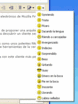
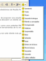

MAX 5.0: Software Libre para Windows.
OpenCD basado en DiscTree

MOZILLA THUNDERBIRD:
Mozilla
Thunderbird .Con avances muy prometedores y un ilustre
historial, Mozilla Thunderbird es el nuevo cliente de correo
electrónico de Mozilla Firefox, desarrollado como plataforma
totalmente independiente.
Al igual que el navegador Firefox, Thunderbird usa el mismo lenguaje de
interfaz llamado XUL, además de proponer una arquitectura
especialmente diseñada para funcionar al compás
de Firefox. Un entorno limpio e intuitivo, que nos deja descubrir un
cliente sencillo y funcional.
No ofrece tantas opciones como otros clientes, pero sin embargo dispone
de interesantes características como unos potentes filtros
de correo, el soporte para temas y la instalación de
extensiones o, la posibilidad de personalizar la barra de herramientas
de la ventana principal.
Las extensiones UI permiten añadir
opciones y características específicas que
harán nuestra experiencia con este cliente más
personal e interesante.

 
